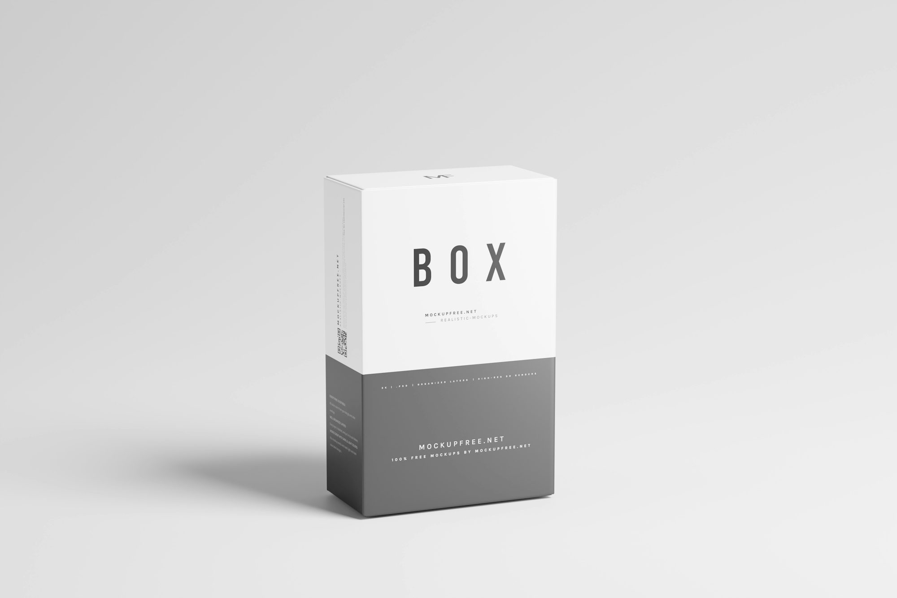

Navigating the Future: The Role of Programming Languages in Emerging Technologies
This article examines how various programming languages contribute to the development of emerging technologies, highlighting their unique features and applications.
Message Us
Topics archive
The Evolution of Display Technology: From CRT to OLED
This article explores the journey of display technology, tracing its evolution from cathode ray tubes to modern OLED screens, and examining the impact on consumer electronics and entertainment.
Sofia Martinez
November 04, 2024
Harnessing the Power of AI: Transforming Industries for a Smarter Future
This article explores the impact of artificial intelligence across various industries, highlighting innovations and applications that are revolutionizing the way we work and live.
Emily Chen
December 27, 2024
The Future of Work: Embracing Remote Collaboration and Flexibility
An in-depth analysis of the changing landscape of work, focusing on the rise of remote collaboration, flexible work environments, and the implications for businesses and employees.
Liam Johnson
May 12, 2025
Navigating the Future: The Role of Augmented Reality in Everyday Life
This article explores the transformative impact of augmented reality (AR) on various aspects of daily life, from education and entertainment to healthcare and retail, highlighting its potential to enhance our experiences.
Emma Johnson
June 05, 2025
The Rise of Input Devices: Enhancing User Experience in Technology
This article explores the evolution of input devices, their role in enhancing user experience, and the future of human-computer interaction.
Emma Taylor
August 13, 2025
Harnessing the Power of Digital Technologies for a Sustainable Future
This article explores how digital technologies can drive sustainability across various sectors, enhancing efficiency and reducing environmental impact.
September 29, 2024